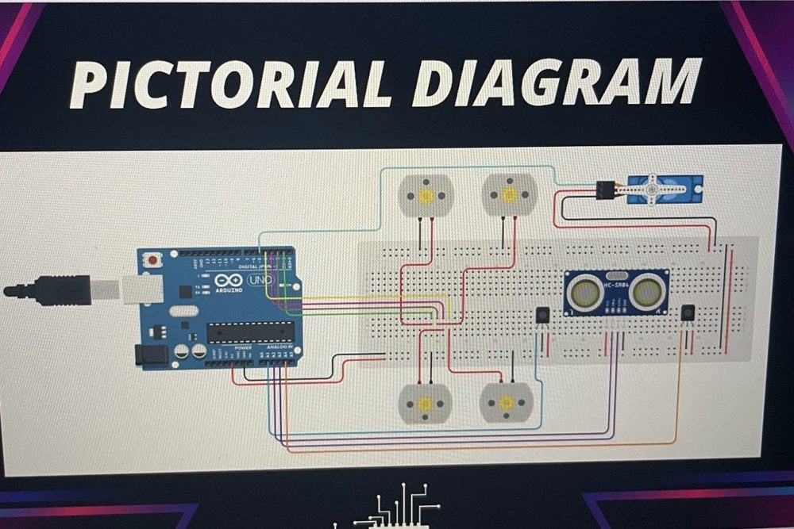

Goal
Build a robot that can run a pre-designed route marked with black tape on the floor, like a simple automated guided vehicle in a warehouse, and handle obstacles on that route without a person stepping in.


Hardware
| Part | Job |
|---|---|
| Arduino Uno | Central processor: reads sensors and controls the motors |
| L293D motor shield | Drives the four DC motors and gives PWM speed control |
| 2 × IR sensors | Emit infrared light and detect the reflection to tell black tape from the floor |
| HC-SR04 ultrasonic sensor | Measures distance with sound waves to detect obstacles ahead |
| SG90 servo | Turns the ultrasonic sensor to look left and right |
| 4 × DC gear motors | Four-wheel drive with skid steering |
Wiring
I drew the full circuit before building: the Arduino, four motors, the servo, the ultrasonic sensor and both IR sensors. The motor shield uses most of the digital pins, so the sensors connect through the analog header.

Build process
- Step 1ChassisMounted the four gear motors to a 3D-printed base, with wires routed through the deck.
- Step 2ElectronicsStacked the motor shield on the Arduino and wired motors M1 to M4, the servo and the sensors.
- Step 3Sensor mountAdded a printed front mount for the ultrasonic sensor on the servo, and the IR sensors low at the front.
- Step 4Code and testProgrammed on a laptop, then tested on a taped route and adjusted.
How it thinks
The program is a small state machine with three states:
- Follow line: if neither IR sensor sees tape, the line is between them, so drive straight. If one sensor sees tape, the robot has drifted, so it turns back toward that side.
- Avoid obstacle: stop, turn the servo to measure distance left and right, then drive around on the side with more room.
- Find line: angle back toward the route and drive until a sensor sees tape again. If it can't find the line in 2.5 seconds, it stops safely instead of wandering off.
Key code
The code on GitHub is a cleaned-up, commented rewrite of the robot's program, organized around the state machine above.
Steering back onto the line
void followLine() {
bool l = leftOnLine();
bool r = rightOnLine();
if (!l && !r) drive(CRUISE_SPEED, CRUISE_SPEED); // line is between the sensors
else if (l && !r) drive(-TURN_SPEED / 2, TURN_SPEED); // drifted right: steer left
else if (!l && r) drive(TURN_SPEED, -TURN_SPEED / 2); // drifted left: steer right
else drive(CRUISE_SPEED, CRUISE_SPEED); // crossing: keep going
}
Measuring distance with the ultrasonic sensor
digitalWrite(TRIG_PIN, HIGH); delayMicroseconds(10); digitalWrite(TRIG_PIN, LOW); unsigned long us = pulseIn(ECHO_PIN, HIGH, 25000UL); // echo time in microseconds return us / 58; // ~58 us per cm, round trip
Each reading is the median of three pings, which filters out a single bad echo. The robot only pings every 60 ms, because a ping can block for up to 25 ms and the line sensors need to be read as often as possible.
Testing and tuning
- Sensor calibration: I had to calibrate the IR sensors to track the black line accurately. That made tracking much more consistent.
- Code optimization: I found repeated code and turned it into user-defined functions, like
drive()andstopMotors(), so the logic is easier to change. - Design constraints: I had to work around physical limits, like the limited capacity of the power supply for four motors and a servo.
What I learned
- How a simple closed loop works in practice: read sensors, decide, correct, repeat
- Why sensor calibration matters as much as the code
- How to structure a program as states so each behaviour stays separate and easy to test
- How to plan pin use around a shield that takes most of the board's pins